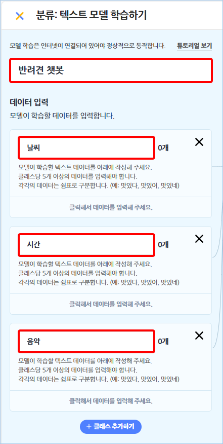
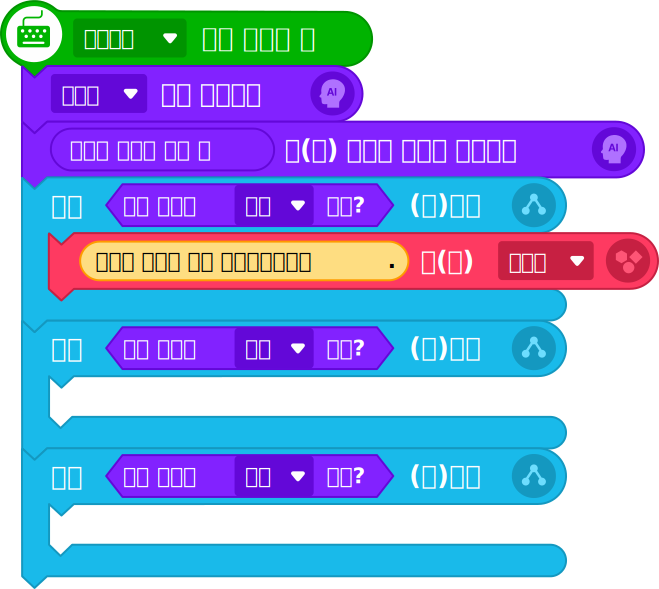

대화 도우미 챗봇 프로그램
텍스트 분류 모델을 활용하여 대화 도우미 챗봇 프로그램을 작성해 보자.

로봇 강아지가 내 질문에 답을 해 주면 좋겠구나.
2인공지능 모델 만들기
문제를 해결하는 데 적합한 인공지능 모델을 만들어 보자.
①엔트리의 ‘인공지능’ 블록 카테고리의 ‘인공지능 모델 학습하기’를 선택한다.


②‘학습할 모델 선택하기’에서 ‘새로 만들기’의 ‘분류: 텍스트’를 선택하고 ‘학습하기’를 클릭한다.
③모델 이름을 ‘반려견 챗봇’, 클래스 이름을 각각 ‘날씨’, ‘시간’, ‘음악’으로 입력한다.

4인공지능 모델 활용 프로그램 작성하기
텍스트를 분류하는 ‘대화 도우미 챗봇’ 프로그램을 작성해 보자.
| 오브젝트 | 명령 블럭 |
|---|---|
 |
 |